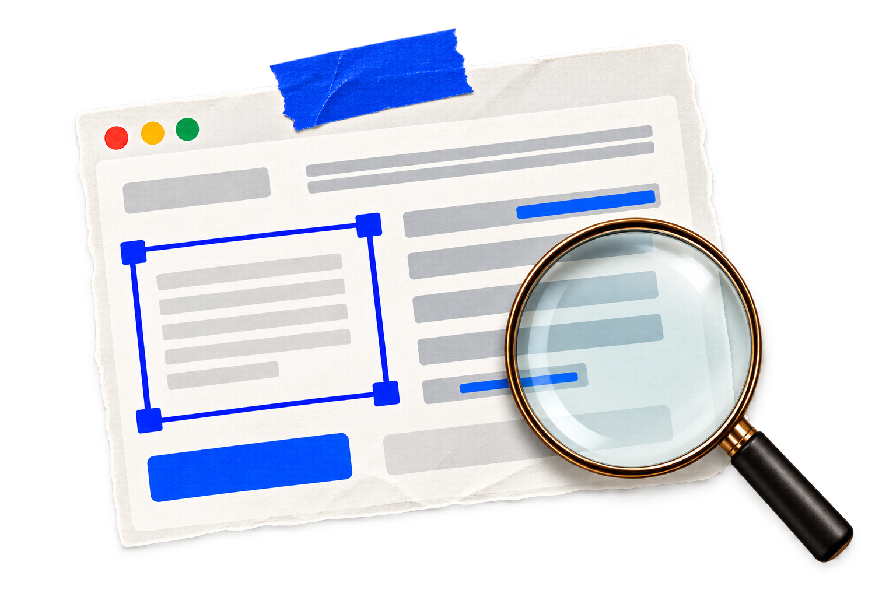
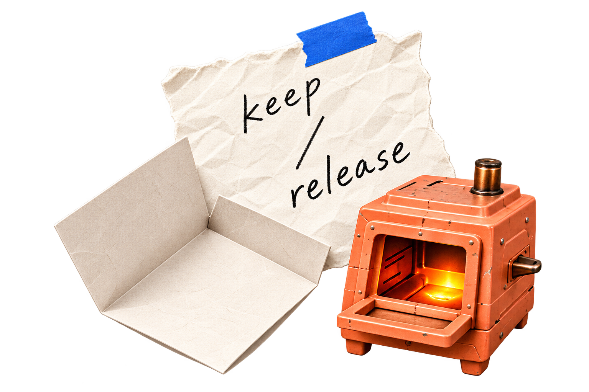

跳到内容
Aurora Sun
Work
About
GitHub
↗
welcome to
my
world

PagePrism ↗

Throwaway ↗
SunJobRadar ↗
留意那些习惯了的摩擦，
动手做出新的可能
✳
ideas made real / 2026
about
me
难题值得拆开看。
面对未知，先调查、先试，
再把想法做出来。
Curiosity in action.
SELECTED WORK / 01—03
three things
made
点开贴纸，看看问题怎样被做成作品。
↘
01
PagePrism
↗
02
Throwaway
↗
03
SunJobRadar
↗